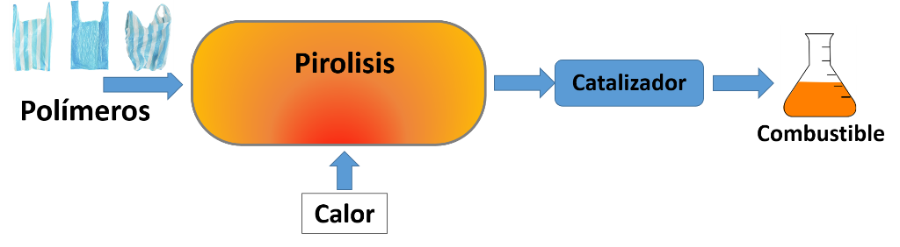
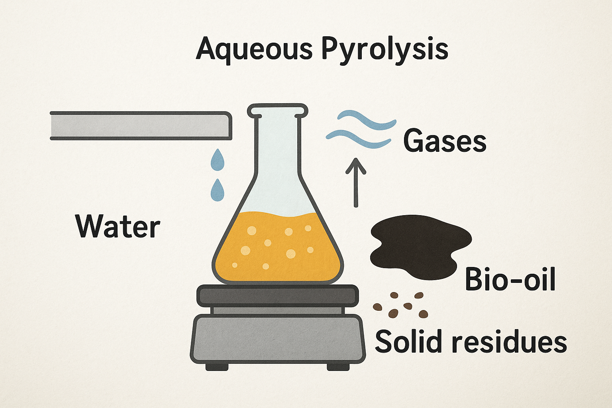
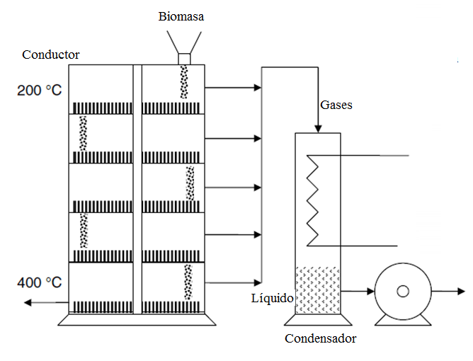

Pirólisis
Definición:
La pirólisis es una forma de termólisis que puede ser definida como la descomposición térmica que experimenta un material cuando se encuentra en ausencia de oxígeno o de algún tipo de reactante.
La descomposición sufrida se puede llegar a producir por medio de una serie bastante complicada de reacciones químicas y de procesos de transferencia de materia y calor.

Tipos de Pirólisis
La pirólisis se puede clasificar en dos tipos:
*Pirólisis acuosa:
Este término es utilizado cuando se necesita denominar la termólisis que se da en presencia de agua,
como por ejemplo como el craqueo por vapor de agua del petróleo o la despolimerización térmica de los residuos orgánicos en crudo pesado.

*Pirólisis al vacío:
Este tipo de pirólisis al vacío implica que el material orgánico se caliente en el vacío para lograr reducir el punto de ebullición y evitar reacciones químicas desfavorables.

Proceso de pirólisis
El proceso para que se dé la pirólisis tiene tres etapas que son las siguientes:
En la primera etapa:
Es en la que se produce una descomposición de forma lenta produciendo al mismo tiempo pequeñas cantidades de agua, óxidos de carbono, hidrógeno y metano.
Esta descomposición se produce como una consecuencia de la ruptura de enlaces debido a alta temperatura del proceso y como una consecuencia de la liberación de gases retenidos en el carbón.
En la segunda etapa:
Es conocida como la etapa de la descomposición térmica activa.
La temperatura en esta etapa aumenta y se produce una fragmentación más profunda de la molécula de carbón formando hidrocarburos condensables y alquitranes.
Esta etapa se inicia en los 360ºC y finaliza cuando se han alcanzado temperaturas alrededor de los 560ºC aproximadamente.
En la ultimo etapa:
La última etapa, se produce a temperaturas superiores a los 600ºC, y se caracteriza por la eliminación gradual de hidrógeno y otros heteroátomos.
Importancia
La pirolisis es muy importante porque se encarga de facilitar el control de contaminación del aire con respecto a la incineración.
Ayuda además, a reducir el volumen de basura que entra y la producción de residuo estéril, lo que aumenta la vida y mejora la calidad de los rellenos sanitarios en relación a la basura no tratada.
Ejemplos
Pirolisis de biomasa:
Con esta pirolisis se pueden llegar a obtener combustible a partir de la borra de café, compuestos fenológicos antioxidantes, polifenoles de la caña de azúcar.
Pirolisis de alcanos:
Este caso también se conoce con el nombre de cracking o desintegración, el cual puede ser térmico, catalítico y por medio de tratamiento con hidrógeno.
Pirolisis del petróleo:
En el caso del petróleo los alcanos son sometidos a altas temperaturas produciendo hidrocarburos.
Pirolisis de plásticos:
Por medio de este proceso en el cual el calor ayuda a descomponer en gas los materiales, se ha logrado descomponer el plástico en sus elementos básicos. Los gases obtenidos pueden inyectarse de forma directa en motores para la producción de energía lo que genera reducción de la contaminación por plásticos puesto que se pueden usar como materia prima de este proceso.
Pirolisis de la madera:
Es la descomposición de la madera por el calentamiento de hasta 450º C sin que exista un acceso del aire con la formación de los productos gaseosos y líquidos así como del residuo sólido, que es carbón vegetal.